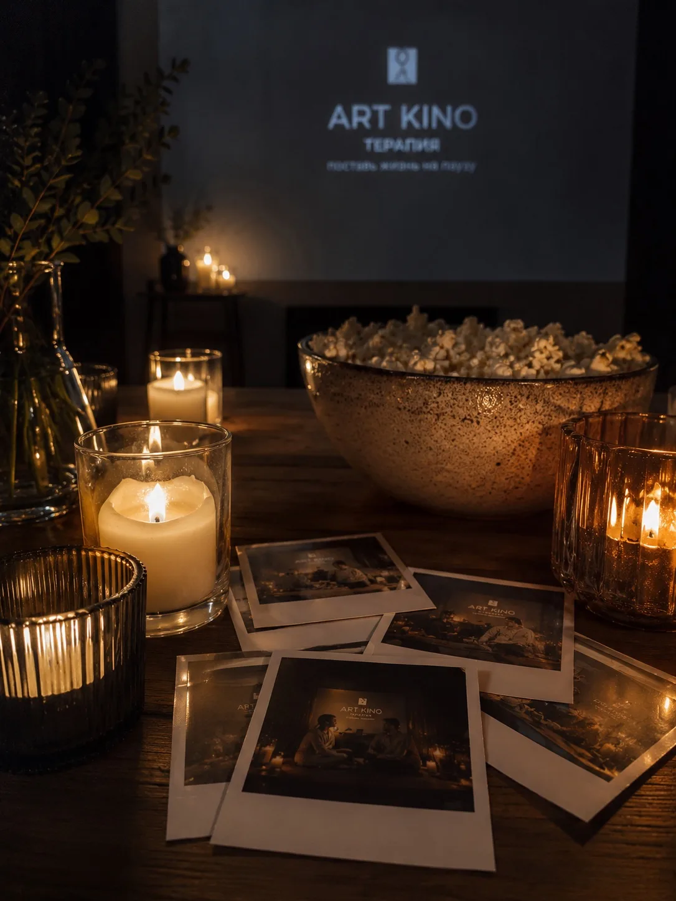
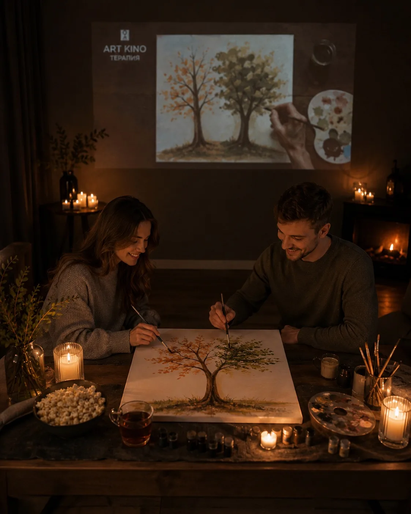
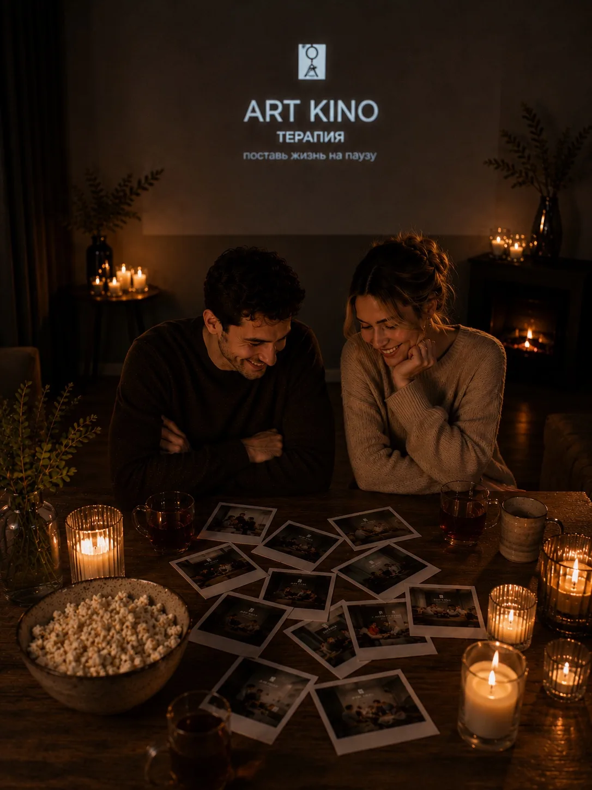
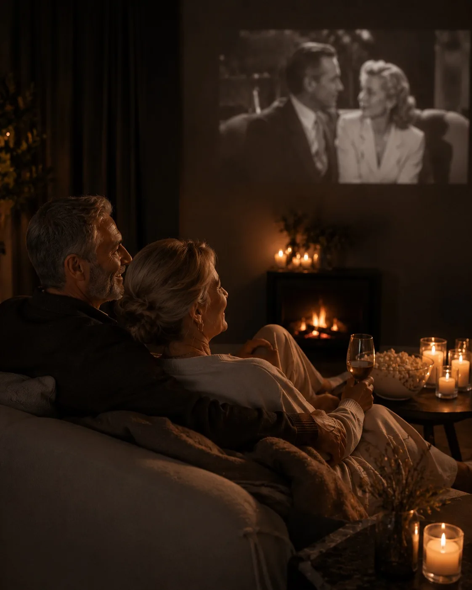
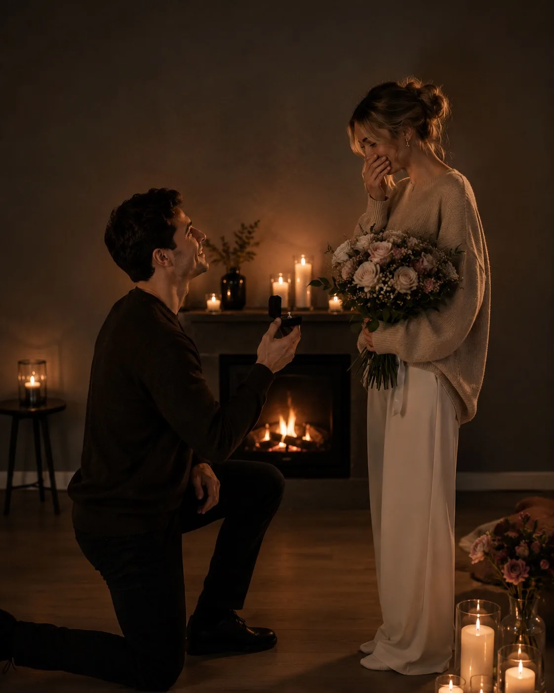
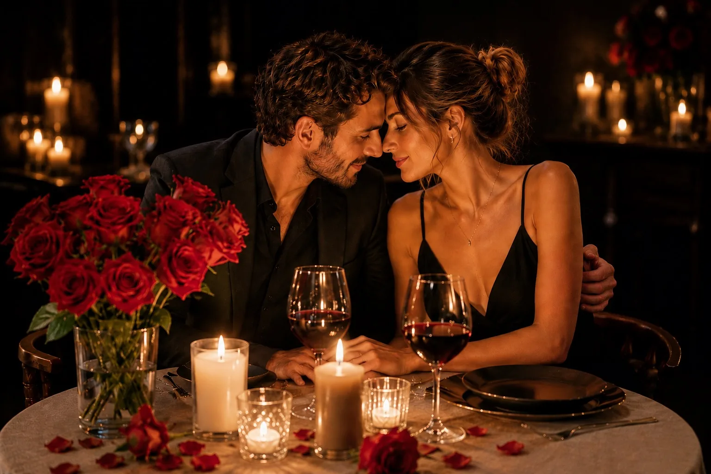

Цифровой детокс
На входе вы сдаете телефоны. Никаких уведомлений, звонков и рабочих чатов.
Авторский проект психолога-регрессолога
Поставьте жизнь на паузу. И пусть весь мир подождет.
Безопасное пространство для семейных пар, где можно отдохнуть, перезагрузиться и снова услышать друг друга без телефонов, спешки и бытового шума.
Когда рутина отдаляет
Вы чувствуете, что рутина отдаляет вас друг от друга? Быт забирает романтику, а разговоры свелись к обсуждению планов и покупок?
Арт Кино-Терапия помогает парам вернуть близость, тепло и прежние семейные ценности. Это бережный формат, в котором можно услышать друг друга до того, как станет слишком поздно.
Кино-арт-терапия помогает безболезненно прожить сложные периоды, сохранить творческий настрой в стрессе, расслабиться и перезагрузиться.
Зачем нужна пауза
Это видео про состояние, знакомое многим семьям: рядом, но не вместе. Формат встречи помогает выключить внешний шум и вернуться к живому контакту.
Как проходит вечер
На входе вы сдаете телефоны. Никаких уведомлений, звонков и рабочих чатов.
Мягкий свет, треск камина, расслабляющая музыка, ароматный чай и сладости.
Карточки с вопросами помогают мягко поднять важные темы и узнать партнера с новой стороны.
Глубокий фильм о любви и семейных ценностях: из экспертной подборки или по вашему выбору.
Что будет в сеансе






Зачем вам это нужно
Вы найдете точки соприкосновения, даже если кажется, что все потеряно. Откровенные разговоры без осуждения исцеляют старые обиды и помогают вспомнить, почему вы когда-то решили быть вместе.
Этот формат идеален, если
Бесконечные дела, стресс и режим “надо” не оставляют места для нежности и живого разговора.
Вы рядом, но будто каждый в своем мире. Вечер помогает вернуть ощущение “мы”.
Необычный формат для пары, которая хочет укрепить брак и защитить его от кризисов.
Варианты и форматы встреч
Терапевтическое свидание
Классический формат для пар, которые хотят вернуть тепло, пережить кризис, укрепить семейные ценности или просто провести вдвоем прекрасный вечер.
Вечер воспоминаний
Формат для годовщины или романтического вечера, чтобы вспомнить, с чего все начиналось. На большом экране — ваш свадебный фильм или семейный архив.
Предложение руки и сердца
История, которую ваша половинка будет с гордостью рассказывать всю жизнь: индивидуальный сценарий и бережная организация финала.
Подарочный сертификат
Сертификат на Арт Кино-Терапию — ценный подарок друзьям, родителям или семейным знакомым на годовщину свадьбы. Вы дарите паре 3 часа тишины, свидание без детей и гаджетов, а главное — шанс услышать друг друга.
Оформить подарочный сертификатFAQ
Основная запись идет по телефону: +7 928 300-35-22.
Да. Формат подходит и для восстановления после усталости, и для необычного глубокого свидания.
Вы можете выбрать сюжет сами или довериться экспертной подборке.
На входе телефоны остаются за дверью, чтобы в течение вечера вы были только вдвоем.
Забронировать вечер для двоих